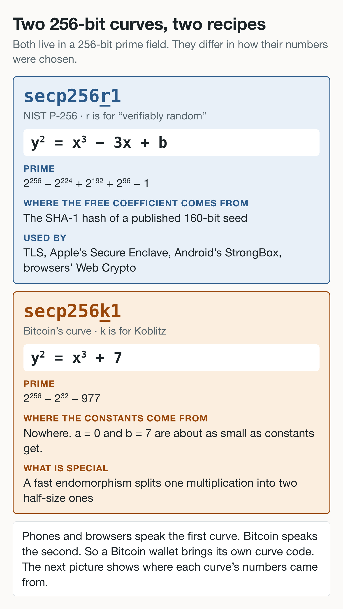
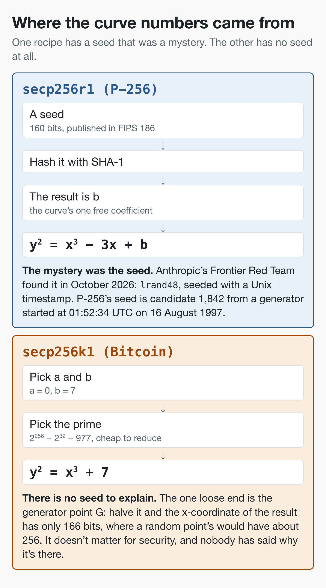
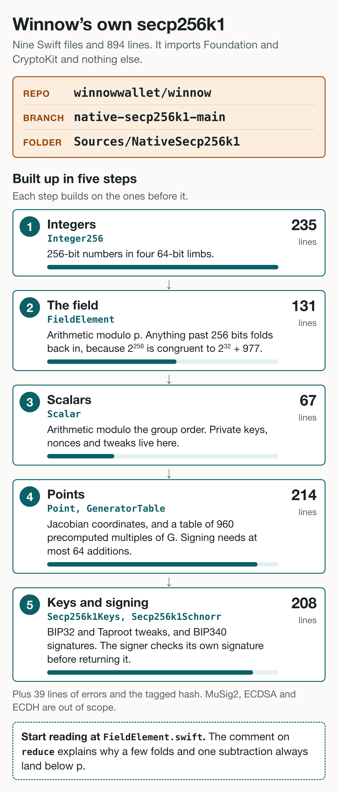
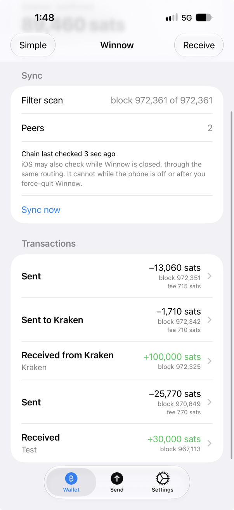
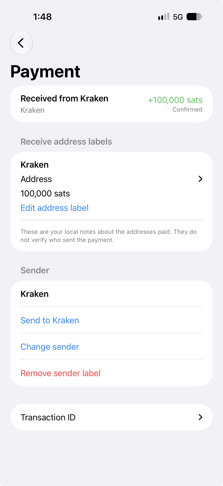

There was no phrase
For 29 years, the seeds behind NIST's elliptic curves were cryptography's favourite conspiracy theory. Every curve from P-192 to P-521 in FIPS 186 is "verifiably random": its coefficient comes from the SHA-1 hash of a published 160-bit seed. Anyone could check the hash. Nobody could say where the seeds came from. And once NIST dropped Dual_EC_DRBG in 2014, an unexplained number in a NIST curve looked like a place to hide something.
The seeds were apparently made by Jerry Solinas at the NSA in 1997, and the story that came down from him was charming. He reportedly said they were hashes of English phrases, something like SHA1("Jerry deserves a raise."), and that the phrases were lost with an old computer. He tried every phrase he could remember. None matched, as Stephen Weis tells it. Solinas died in 2023. That October, Filippo Valsorda offered $12,288 to anyone who found them.
On 16 October, Anthropic's Frontier Red Team published the answer. There was no phrase.
An Anthropic employee asked Claude how the seeds were made, without pointing it at the clue. In under half an hour it guessed that a 1990s program had used a weak random number generator, wrote a scanner for that generator's fingerprints, spotted a pattern of zero top bits, and recovered the generator's state with lattice reduction. The seeds are outputs of the C library's lrand48, seeded with Unix timestamps from 1997 and 1998. In Anthropic's code, P-256's seed is candidate 1,842 from a generator started at 01:52:34 UTC on 16 August 1997. The bounty goes to the Internet Security Research Group.
Bitcoin's curve has no seed
Bitcoin doesn't use P-256. It uses secp256k1, from Certicom's SEC 2: y² = x³ + 7 over the prime p = 2²⁵⁶ − 2³² − 977. Nothing in it is random. The prime is shaped to make arithmetic cheap, and 0 and 7 are about as small as constants get. There's no seed to explain.

The r in secp256r1 is for "verifiably random", the k in secp256k1 for Koblitz.

P-256's seed was the mystery, solved in October 2026. Bitcoin's curve has no seed. Its one loose end is the generator.
One loose end is left: halve Bitcoin's generator G and the x-coordinate has only 166 bits, where a random point's would have about 256, and a later post will look at why.
Every wallet brings its own curve
Bitcoin pays for its own curve in compatibility. Apple's Secure Enclave only does P-256. Android's StrongBox documentation lists P-256, and secp256k1 isn't on the page. Browsers' Web Crypto offers P-256, P-384 and P-521. So a Bitcoin wallet can't hand its keys to the phone's secure hardware or use the platform's signatures. It brings its own curve, and it has to keep it right everywhere it runs.
Software that needs secp256k1 ends up in one of three places. It wraps libsecp256k1, the C library inside Bitcoin Core. It ports it. Or it writes its own.
| Implementation | Where you meet it | Relation to libsecp256k1 |
|---|---|---|
| libsecp256k1 (C) | Bitcoin Core | the reference |
| rust-secp256k1 (Rust) | rust-bitcoin, Winnow Rescue | bindings to it |
| electrum-ecc (Python) | Electrum | a ctypes wrapper around it |
| P256K (Swift) | Winnow, until build 97 | a wrapper around it |
| NBitcoin.Secp256k1 (C#) | NBitcoin, Wasabi | a managed port: the same algorithms, rewritten |
| decred secp256k1 (Go) | btcd, lnd | its own, pure Go |
| Bouncy Castle (Java) | bitcoinj | its own |
| noble-curves (JavaScript) | bitcoinerlab's secp256k1 package | its own |
| trezor-crypto (C) | Trezor | its own, but Trezor's firmware hands secp256k1 signing to libsecp256k1 |
| NativeSecp256k1 (Swift) | Winnow, from build 97 | its own |

Winnow's own curve code is one short folder on a branch of the Winnow repo.
I filled that in from each project's own pages. Wrappers share libsecp256k1's code and the port shares its design, so none of them can disagree with it. Only the ones that wrote their own can. One library means one thing to review very well. It also means one mistake lands everywhere at once, and you'd only notice with an independent implementation.
So I wrote the curve
I want Winnow to earn trust by publishing the design, showing the assumptions and changing course when the evidence does. A Swift rewrite doesn't inherit anyone's correctness. Passing known-answer tests proves agreement on those answers and nothing more. It says nothing about timing leaks, bad randomness or malformed input, which is why the native Swift research tracks those separately.
Winnow has been a Bitcoin wallet written in Swift for a while, with one exception. Every key, tweak and signature went through P256K, a Swift wrapper around libsecp256k1. That library is excellent. It was also the one part of the wallet I couldn't read end to end, from the screen down to the arithmetic. Owning it meant writing the curve, because Apple won't: CryptoKit's P256 is NIST's curve, and there's no system secp256k1.
I started from a proof of concept that did field arithmetic and BIP340's lift_x, and nothing else. It couldn't derive a key or sign anything. Getting from there to a wallet that pays was the interesting part.
The result is NativeSecp256k1: nine files, 894 lines of Swift, 781 of them not blank, importing Foundation and CryptoKit and nothing else. It does what a single-key wallet needs and no more: field and scalar arithmetic, point addition and multiplication, compressed and x-only keys, the BIP32 and Taproot tweaks, BIP340 signing and verification, and the tagged hash. I shipped it in a single-key build of Winnow with shared accounts taken out.
| File | What it does | Lines |
|---|---|---|
Integer256 |
256-bit numbers in four 64-bit limbs | 235 |
FieldElement |
arithmetic modulo p | 131 |
Scalar |
arithmetic modulo the group order | 67 |
Point |
Jacobian points | 138 |
GeneratorTable |
precomputed multiples of G | 76 |
Secp256k1Keys |
private, public and x-only keys, and tweaks | 140 |
Secp256k1Schnorr |
BIP340 signing and verification | 68 |
Secp256k1Error, TaggedSHA256 |
errors, and the tagged hash | 39 |
| Total | 894 (781 not blank) |
It's variable-time, and it doesn't wipe secrets from memory; libsecp256k1 guards against both. On a phone, neither is the worry yet. Exploiting them takes code running on the device or a way to time thousands of my signatures. The worry is whether the math is right.
Is the math right?
A broken signer usually fails loudly: its signatures don't verify. The dangerous bugs are quiet. Some live on rare paths, like a carry out of the top limb that ordinary inputs never reach. Others are consistent: a wrong constant or a wrong hash that signing and verifying share, so every signature still checks out against the same wrong code.
Three things check the module. Recorded answers from libsecp256k1 and BIP340's reference code cover hand-picked edge cases. The official BIP32, BIP86, BIP340 and BIP341 vectors cover the specs. And a fuzzer throws mutated inputs at it on every pull request.
I wanted to know whether the fuzzer was doing its job, so I planted 21 realistic bugs in the curve code, one at a time, and ran the pull-request fuzz job against each. It caught 13. It missed three of the five consistent bugs, because it only checked the module against itself, and five of the seven rare-path ones, because random bytes never got there. Running it 25 times longer caught nothing more. The unit tests did better, at 20, and the one they missed, a lost carry in the multiplier, got past everything.
So the fuzzer now has something to argue with: a second implementation, about 300 lines of deliberately plain Swift that shares none of the module's algorithms. It uses 32-bit limbs instead of 64, Montgomery multiplication instead of p's special form, affine points instead of Jacobian, and BIP340 written straight from the spec. It has to reproduce BIP340's own vectors before it's trusted. The fuzzer demands byte-for-byte agreement between the two and pushes half its inputs to the edges: around the group order and p, or long runs of ones. A new test feeds both implementations operands built from awkward limbs, all ones or the top bit alone, which is what it takes to reach that carry.
Against the same 21 bugs, the fuzzer now catches 19, and with the new test the unit tests catch all 21. The two the fuzzer still misses sit deep in field arithmetic that keys and points can't steer, which is what that test is for. None of it turned up a bug in the real module: it passes every check, old and new.
Tests and fuzzers only show the bugs they find. The stronger tool is a proof: a specification of what the code must do, and a machine that checks the code meets it for every input. That's what people mean by formal methods. I've started trying it on this module with a proof assistant called Lean. In a first trial its proofs rejected every bug I planted in the proved version, including the lost carry above. It isn't in the wallet yet, and it covers the arithmetic, not the rest. A later post will say what the proofs assume and what they don't.
The curve is the small part
At commit 3794057, the single-key build has 24,476 non-blank lines of production Swift:
| Area | Lines |
|---|---|
| Networking and sync | 8,749 |
| The app | 7,794 |
| Wallet and spending | 5,659 |
| Keys and crypto, including the 781-line curve | 2,274 |
The biggest part is the one that learns about the chain without trusting a server. The compact-filter client and its peers outweigh the whole wallet core, and the curve is 3% of the total.
Paying Kraken
Build 97 went to internal TestFlight testers on 20 October, from tag v0.8.7 and its release run. It replaces the App Store Winnow on a tester's phone, it can't see shared-account funds, and its iCloud backup overwrites one that has them. Its notes say not to install it over any.
Then I installed it on my own phone, over the App Store Winnow and a live wallet. It upgraded in place and kept receiving and sending. One of those sends is ad627d56…5d6e:

The wallet after the upgrade. The two bottom rows predate build 97; the top three are the funding coin and the two sends below.
| Size | 193 bytes, 142 vbytes |
| Input | output 1 of deeeaa2b…9d6a: 100,000 sats locked to a Taproot output key |
| Witness | one item of 64 bytes |
| Outputs | 98,290 sats of change; 1,000 sats to a Kraken deposit address |
| Fee | 710 sats, 5.0 sat/vbyte |
| Locktime | 972,341 |
| Mined | block 972,342, 15:03:42 UTC on 20 October |
One 64-byte witness item is a Taproot key-path spend with the default sighash, which commits to every input and output. The locktime tells you when it was signed. Winnow sets it the way Bitcoin Core does, never above its own tip, so the phone signed after it saw block 972,341 and before 972,342 was mined: between 14:16 and 15:03 UTC, by the miners' timestamps.
I checked the signature two ways. Winnow's own sighash code and Swift verifier accept it, and so does libsecp256k1. Then, with nothing from the wallet, a short Python script rebuilt the sighash from the raw bytes, and BIP340's reference.py accepted the signature too. Flip one bit, or change the amount by one satoshi, and both reject it.
The chain can't say which code signed. libsecp256k1 would have made a signature that verifies the same way. The evidence is the build: build 97's job never compiled libsecp256k1, and that's what the phone was running. The signature adds one thing. To make it, the Swift code had to derive the private key through BIP32 and BIP86, and it arrived at exactly the key the coin was locked to.

The coin the first send spent. The label is my own note on the address; the screen says it doesn't verify who sent the payment.
That first payment didn't reach my account. Kraken's minimum Bitcoin deposit is 10,000 sats, ten times what I sent, and smaller deposits are marked failed and lost. A 1,000-sat lesson.
So I sent another: 12,345 sats, the same shape, one 64-byte signature at 5.0 sat/vbyte, mined in block 972,351. That one went through. Its input was the first payment's change, so build 97 signed the transaction that made the coin and then spent it. Both coins arrived after the upgrade. A 4,230-sat coin from before it was still unspent when I wrote this, and spending it would show the Swift code signing for a coin the C build received.
Multisig needed no new curve code
The latest internal build, 0.8.11, adds Taproot multisig in Advanced mode: two phones and a Ledger in a 2-of-3, say, with an optional recovery path that lets fewer signers move a coin that has sat still for a while. Each signer makes an ordinary BIP340 signature over a different message (the script-path one, from BIP342), so between 3794057 and 7b7ff30, the curve module's Swift files didn't change at all. The price is paid on-chain: a 2-of-2 spend is about 42 vbytes bigger per input than a single signature, and anyone can see it's multisig.
On 26 October 2026 a Nano X co-signed a spend from a Winnow 2-of-2 on mainnet (the transaction): two BIP340 signatures on the script path, one from the phone and one from the Ledger. The research page has the details; the Ledger signer is draft pull request #255, and the rest of the line is draft pull request #246.
The bar
The NIST seeds waited 29 years for an explanation, and the story everyone told turned out to be wrong. What settled it was evidence anyone can rerun, and that's the bar for a wallet too.